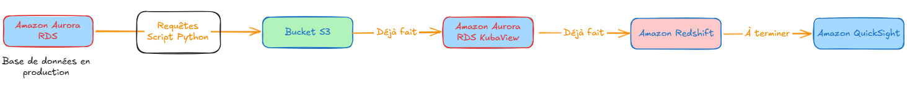
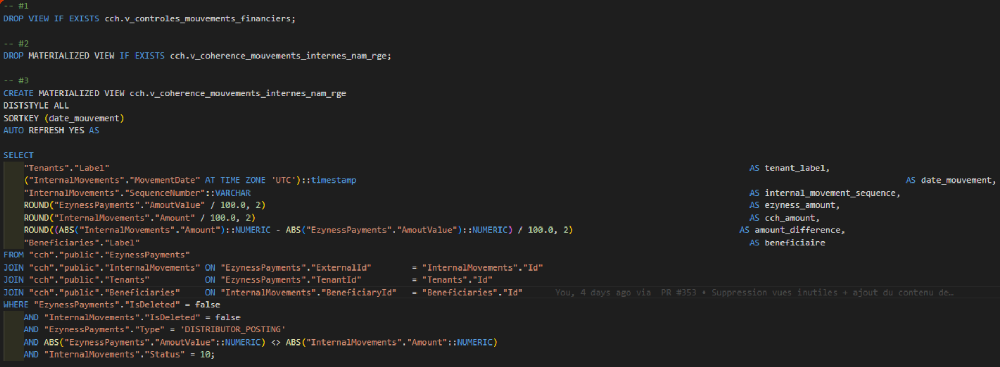
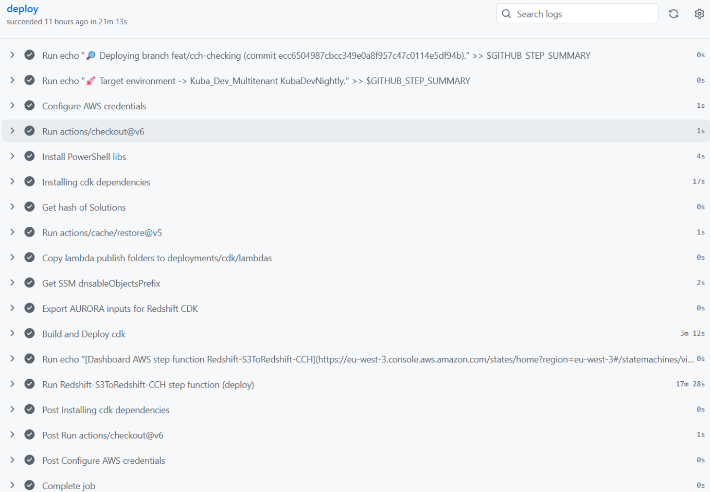

Technique
Cette section présente les compétences techniques développées lors du stage, illustrées par des traces concrètes et évaluées dans un bilan réflexif.
Architecture du pipeline de données

Trace 1 : Schéma d'architecture du pipeline de données initial. Les cadres colorés indiquent le rôle de chaque service AWS, et les flèches montrent le sens du flux de données avec des annotations précisant les transformations à chaque étape.
Savoir-faire mobilisés
- 01 Analyser un environnement technique et en déduire une architecture
- 02 Comparer des solutions techniques et justifier un choix
- 03 Schématiser un flux de données entre services cloud
- 04 Simuler un environnement cloud en local
Descriptif général
La Trace 1 est le schéma d'architecture que j'ai réalisé lors de la première semaine de stage. Il présente l'architecture initiale envisagée pour automatiser la remontée des erreurs depuis la base de données de production vers un dashboard QuickSight. Le flux complet traverse cinq services AWS : RDS pour la base de production, S3 pour le stockage intermédiaire en CSV, une seconde instance RDS pour le filtrage, Redshift pour l'analytique en colonnes, et enfin QuickSight pour la visualisation.
Cette trace est au cœur du sujet initial. Avant d'écrire la moindre ligne de code, il fallait décider comment articuler les différents services AWS pour répondre au besoin d'automatisation, dans un contexte où je n'avais aucun accès à la vraie base de données ni à sa structure. Ce schéma a servi de référence pour toute la phase de développement initiale, avant le pivot vers le 0-ETL en semaine 2.
Descriptif des savoir-faire
01 Analyser un environnement technique et en déduire une architecture
Le stage posait des contraintes inhabituelles : je devais concevoir un pipeline de données sans aucun accès à la base de production, ni même à sa structure. J'ai dû étudier l'environnement technique existant de Kuba et comprendre comment les différents services AWS pouvaient s'articuler pour répondre au besoin. J'ai analysé les contraintes de chaque service (coût, performance, maintenance) et en ai déduit une architecture en cinq étapes, chacune ayant un rôle précis dans le flux de données. Sur la Trace 1, le cadre autour de RDS indique qu'il s'agit de la source de données, tandis que celui autour de QuickSight montre la destination finale pour la visualisation.
02 Comparer des solutions techniques et justifier un choix
Avant de valider cette architecture, j'ai comparé deux approches : un script Python autonome qui gère tout (lecture BDD, transformation, écriture CSV, upload S3) versus une architecture utilisant les services AWS managés. La première solution aurait été plus simple à développer mais beaucoup plus complexe à maintenir : chaque étape (connexion, transformation, upload) aurait nécessité du code custom à déboguer et à faire évoluer. J'ai préféré m'appuyer sur des services managés qui réduisent la maintenance future, même si cela impliquait d'apprendre à utiliser plusieurs services AWS. Cette analyse comparative m'a permis de justifier mon choix technique auprès de mon manager Yannick Nya.
03 Schématiser un flux de données entre services cloud
La création du schéma Excalidraw m'a obligé à formaliser précisément chaque étape du flux, les formats de données à chaque niveau (SQL → CSV → colonnes), et les transformations nécessaires. Les flèches entre chaque bloc montrent le sens du flux de données, et les annotations précisent le rôle de chaque service. Par exemple, la flèche entre RDS et S3 indique "Export CSV quotidien", tandis que celle entre S3 et Redshift indique "Import et transformation". Ce schéma a servi de référence tout au long du projet, même après le pivot vers le 0-ETL.
04 Simuler un environnement cloud en local
En attendant les accès AWS, j'ai utilisé Docker pour faire tourner MinIO, un stockage compatible S3, afin de simuler le comportement du cloud en local. Je ne connaissais pas Docker avant le stage, j'ai découvert cet outil grâce à l'IA qui me l'a suggéré, puis j'ai appris en faisant des essais-erreurs et en demandant à mes collègues. Cela m'a permis de développer et tester mon script Python de migration sans dépendre de l'infrastructure réelle. J'ai aussi construit une base de données fictive avec des données inventées manuellement pour valider le fonctionnement du pipeline avant de passer en production. Cette approche m'a permis d'avancer rapidement dès la première semaine, sans attendre les accès.
Utilisation de l'IA
J'ai utilisé l'IA (OpenCode Go avec les modèles Kimi 2.6 et GLM) pour m'aider à écrire le script Python de 1600 lignes. L'IA ne m'a pas remplacé : je comprenais la logique globale et je validais chaque partie du code, mais elle m'a fait gagner du temps sur la syntaxe et m'a suggéré des approches que je ne connaissais pas (comme l'utilisation de MinIO pour simuler S3). C'était un outil d'assistance, pas de substitution.
Vues matérialisées SQL

Trace 2 : Extrait du code SQL d'une vue matérialisée déployée sur Redshift. Les cadres colorés mettent en évidence les jointures complexes, les transformations de données et les agrégations.
Savoir-faire mobilisés
- 01 Écrire des requêtes SQL complexes avec jointures multi-tables
- 02 Transformer des requêtes en vues matérialisées
- 03 Gérer les problèmes de mémoire sur des bases volumineuses
- 04 Respecter des standards de qualité automatiques stricts
Descriptif général
La Trace 2 montre un extrait de code SQL d'une vue matérialisée déployée sur Amazon Redshift. Suite au pivot vers l'approche 0-ETL en semaine 2, les requêtes de détection d'erreurs ont été transformées en vues matérialisées directement intégrées au codebase CCH. Chaque vue persiste les résultats de sa requête et se rafraîchit automatiquement.
Cette trace est au cœur de la solution finale. Les vues matérialisées permettent un rafraîchissement automatique des données sans pipeline externe, et sont directement déployables via le CDK de l'entreprise. En semaine 8, j'ai aussi créé une vue complète de zéro, sans modèle de départ.
Descriptif des savoir-faire
01 Écrire des requêtes SQL complexes avec jointures multi-tables
Les requêtes de détection d'erreurs impliquent des jointures multi-tables, des sous-requêtes, et des filtres métier complexes (reversals, mouvements de fonds, soldes d'agents). Les reversals sont des annulations de transactions, tandis que les mouvements de fonds correspondent à des transferts entre comptes internes. J'ai dû comprendre la logique métier derrière chaque requête pour les adapter correctement. Sur la Trace 2, les cadres colorés mettent en évidence les jointures complexes entre plusieurs tables, les transformations de données (comme le calcul de soldes), et les agrégations (SUM, COUNT).
02 Transformer des requêtes en vues matérialisées
Le passage de requêtes simples à des vues matérialisées a nécessité de comprendre les spécificités de Redshift. C'était la première fois que j'avais des vues à créer, j'ai donc eu recours à l'IA pour comprendre la syntaxe, mais aussi aux autres vues existantes de l'entreprise pour m'aider à transformer ces requêtes au début. J'ai aussi dû retirer les filtres temporels pour permettre l'historisation des données : au lieu de limiter l'extraction aux données du jour, la vue compile et conserve toutes les données à chaque rafraîchissement.
03 Gérer les problèmes de mémoire sur des bases volumineuses
En semaine 2, j'ai découvert que les requêtes étaient trop lourdes pour la base de production. Mon script Python utilisait des fetchall() qui accumulaient toutes les données en mémoire et faisaient planter le processus. J'ai dû créer une nouvelle fonction qui ferme le cursor après chaque lot, et repenser la gestion de la mémoire. J'ai aussi simplifié la structure de 63 à 11 colonnes pour réduire la complexité. Ce qui marchait avec ma petite base fictive ne marchait plus avec la vraie base.
04 Respecter des standards de qualité automatiques stricts
Les tests de qualité automatiques de l'entreprise étaient très stricts : parseurs SQL, vérification de la syntaxe, formatage du code. Faire passer mes vues a demandé de nombreux ajustements. J'ai passé beaucoup de temps à fixer des bugs de déploiement liés à des fonctions mutables comme CURRENT_DATE qui n'étaient pas acceptées par le parseur de Redshift. Cette expérience m'a appris l'importance du code propre en environnement professionnel.
Vue créée de zéro en semaine 8
En semaine 8, j'ai créé une vue complète de zéro sans modèle de départ : la vue des soldes de comptes bénéficiaires. Elle permet d'avoir le solde des comptes bénéficiaires et leur historique. Cette vue démontre ma maîtrise de la structure des tables et de la logique métier acquise au fil des semaines.
Utilisation de l'IA
J'ai utilisé l'IA un peu pour cette partie, principalement au début quand je ne savais pas comment créer des vues matérialisées. L'IA m'a aidé à comprendre la syntaxe et les bonnes pratiques, mais je me suis aussi beaucoup appuyé sur les vues existantes de l'entreprise pour apprendre par l'exemple.
Déploiement CDK et Git

Trace 3 : Interface Git de l'entreprise montrant les branches de développement et le processus de Pull Request avec tests qualité automatiques.
Savoir-faire mobilisés
- 01 Utiliser Git en environnement professionnel (branches, PR, code review)
- 02 Déployer des ressources AWS via le CDK
- 03 Débugger des erreurs de pipeline CI/CD
- 04 Gérer des conflits de branche après une mise à jour majeure
Descriptif général
La Trace 3 illustre le processus de déploiement utilisé chez Kuba : chaque modification passe par une Pull Request sur la branche dédiée, subit des tests de qualité automatiques (parseurs SQL, vérification de la syntaxe), puis est déployée via le CDK (Cloud Development Kit) sur les environnements AWS. Il y a deux repos distincts : un pour la partie Data (Redshift) et un pour la visualisation (QuickSight).
Cette trace représente le cadre dans lequel j'ai travaillé pendant tout le stage. C'est aussi le mécanisme qui permet de mettre en production les vues matérialisées et les DataSets QuickSight.
Descriptif des savoir-faire
01 Utiliser Git en environnement professionnel
J'ai découvert les workflows professionnels de Git : il y a énormément de branches, mais je me rebase sur le main et j'ai ma branche personnelle. Au début, j'ai travaillé sur feat/reporting-cch, puis après un stash, j'ai basculé sur feat/cch-checking. Ce workflow est très différent de ce qu'on voit à l'IUT : tests de qualité automatiques, Pull Requests obligatoires, déploiement continu. Avant le stage, j'utilisais déjà Git avec des branches pour les projets de l'IUT, mais je n'avais jamais travaillé avec des PR et de la code review. J'ai poussé mes premières vues matérialisées sur ma branche dédiée dès la semaine 3.
02 Déployer des ressources AWS via le CDK
Le CDK (Cloud Development Kit) permet d'automatiser le déploiement des ressources AWS (vues Redshift, DataSets QuickSight). J'ai ajouté mes nouveaux DataSets au CDK existant développé par mes collègues. Mon collègue Aurélien Bak, développeur depuis longtemps dans la boîte, a mis au point les CDK GitHub et a déjà travaillé des vues comme les miennes, ce qui m'a permis de m'appuyer sur son travail. En semaine 4, face à la lourdeur de gérer une vingtaine de DataSets individuellement, j'ai commencé à les regrouper pour rendre les futures modifications moins répétitives.
03 Débugger des erreurs de pipeline CI/CD
Les tests qualité automatiques génèrent des erreurs parfois difficiles à interpréter. J'ai passé beaucoup de temps en phases de debug, notamment lors des premiers déploiements de vues matérialisées. Les erreurs de parseur et les problèmes de syntaxe m'ont souvent ralenti, mais m'ont appris à lire et comprendre les logs de déploiement. Quand je n'arrivais pas à comprendre l'erreur, j'envoyais parfois à l'IA pour rester autonome, mais ses réponses étaient souvent approximatives. J'ai donc appris à demander de l'aide à mes collègues quand c'était nécessaire.
04 Gérer des conflits de branche après une mise à jour majeure
En semaine 6, une mise à jour de la base de test a rendu le déploiement très compliqué. Plusieurs collègues y ont passé du temps et nous sommes restés bloqués dessus. C'est un peu flou pour moi car je n'étais pas un acteur majeur de cette résolution, mais cela a cassé le CDK. Avec l'aide d'Aurélien Bak, j'ai passé du temps à modifier le CDK et comprendre les erreurs de déploiement. Cette expérience m'a montré que le CDK était complexe et que je devais solliciter de l'aide sur les parties les plus techniques. Elle m'a aussi appris l'importance de la communication et de la collaboration inter-équipes.
Utilisation de l'IA
J'ai utilisé l'IA pour cette partie, principalement quand je n'arrivais pas à comprendre les erreurs de déploiement. Je lui envoyais les logs pour essayer de rester autonome, mais ses réponses étaient souvent approximatives. J'ai donc appris à ne pas trop me fier à l'IA pour ce type de problèmes complexes et à demander de l'aide à mes collègues qui connaissaient mieux l'infrastructure de l'entreprise.